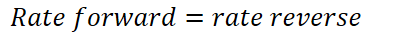
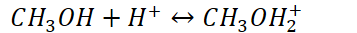
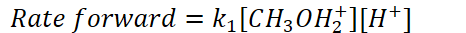
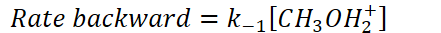
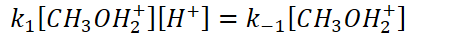
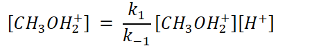
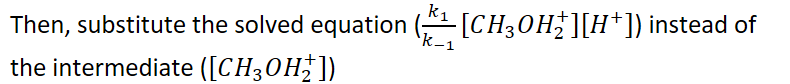
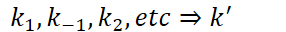

What do we do if the rate law expression includes an intermediate?
Intermediates cannot be controlled
It is okay for catalysts to show up in rate law expressions
Catalysts are added to speed up the reaction
Sometimes our slow step does involve an intermediate
Fast Equilibrium
What is equilibrium?
Some reactions are reversible
At equilibrium, the rate of the forward reaction is equal to the rate of the reverse reaction
Products => reactants and products => reactants are happening at the same rate
{width="4.322916666666667in" height="0.3333333333333333in"}
Example of fast equilibrium:
{width="3.71875in" height="0.34375in"}
{width="4.854166666666667in" height="0.34375in"}
{width="4.59375in" height="0.34375in"}
Therefore,
{width="4.791666666666667in" height="0.34375in"}
Solve for the intermediate:
{width="4.6875in" height="0.6979166666666666in"}
{width="8.229166666666666in" height="0.875in"}
{width="8.166666666666666in" height="0.3541666666666667in"}
{width="2.9791666666666665in" height="0.3333333333333333in"}
{width="8.0625in" height="0.3541666666666667in"}
Fractional orders will exist because of this method!
1/2 order => 4x molarity, 2x rate
1/3 order => 8x molarity, 2x rate
...